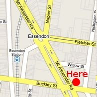

Rehearsals are held on Tuesday evenings during school terms. Additional rehearsals for winds/strings are held as necessary. Our usual venue is the Salvation Army Hall, cnr. Mt. Alexander Road and Buckley Streets, Essendon.
7.15 pm - Arrived and set up ready to play
8.30 pm - Supper break
9.45 pm - Rehearsal concludes - pack up
Players are expected to attend all rehearsals and are asked to practice between rehearsals.
New players please note that you should bring your own music stand to rehearsals.
Attendance policy: Information about rehearsal attendance policy is included on our membership form.
Orchestra Members Only: Please update your planned rehearsal attendance in this spreadsheet. Thank you.
AMEB Grade 4-5 or equivalent at least. Good sight reading ability assumed.
We are particularly interested in violin, bass and horns at the moment.